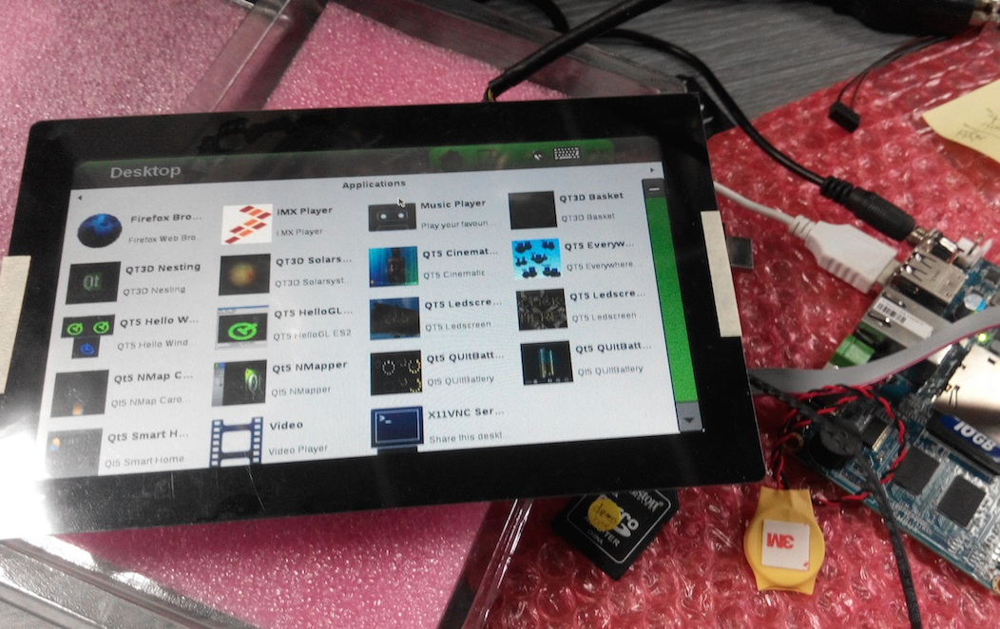

EMBUX is glad to introduce the yocto 1.6.2 test build running on the ICM-2010.

ICM-2010 is a 2.5’’ Pico-ITX ARM-based embedded board, powered by Freescale i.MX6, provides multi-integrated functions for easy implementation.
Please refer EMBUX website for latest update.
Information
- uboot: 2014.04
- kernel: 3.10.53
- rootfs: Yocto 1.6.2 (Daisy)
Below is the introduction for Yocto 1.6.2 (Daisy) from NXP (Freescale) document:
What is the Yocto Project?
“A Linux Foundation workgroup whose goal is to produce tools and processes that enable the creation of Linux distributions for embedded software independent of architecture”
NXP (Freescale) Yocto Project
- Linux distributed build system
- Replacement for LTIB
- Higher integration with community
- Flexible release targets
ICM-2010 Features
- Freescale Cortex-A9 i.MX6 DualLite 1.0 GHz
- On-board DDR3 1GB
- 1 x 18/24 bit LVDS output
- 1 x HDMI 1920x1080
- 1 x 10/100/1000 Mbps Ethelrnet
- 3 x USB 2.0 (2 external + 1 internal)
- 1 x RS-232 (8-wire), 1 x RS-485, 1 x CAN
- 1 x mini-PCIe for WLAN/WWAN support
- 1 x standard SD slot
- 1 x EMBUX X-Port for EiS (EMBUX intelligent system)
- Multiple OS support in Linux/Android
- Low power consumption, 5V DC input